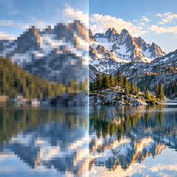

Preguntas frecuentes sobre EnhanceVid, la app para mejorar vídeos en iPhone y iPad.
Tres cosas: ① Subir la frecuencia de fotogramas (24→30 fps, 30→60 fps): calcula fotogramas nuevos entre los originales para que el movimiento sea fluido ② Subir la resolución (HD→Full HD, Full HD→4K): amplía la imagen con más detalle ③ Reducir el ruido: limpia el grano de la poca luz. Puedes combinarlas.
Sí. Puedes pasar de 4K 60 fps a 30 fps o de 4K a Full HD: útil para un archivo más pequeño que compartir o para un aspecto más cinematográfico.
Sí. Más fotogramas o más píxeles significan más información, así que el archivo crece. 30→60 fps es aproximadamente 1,3×, y subir la resolución añade más. Bajar lo hace más pequeño. Antes de empezar verás el tamaño estimado.
No. Se calculan a partir del movimiento entre fotogramas vecinos. Se ven naturales en la mayoría de escenas, pero el movimiento muy rápido o los objetos que se cruzan pueden verse borrosos o desalineados un instante. En los cambios de escena no se mezcla nada: se repite el fotograma anterior.
Solo aparece si tu dispositivo la admite. Depende del dispositivo (chip), aunque tenga la misma versión de iOS.
Nada. EnhanceVid nunca lo cambia ni lo borra: el resultado se guarda como vídeo nuevo. Los vídeos elegidos en Fotos se guardan en Fotos; los elegidos en Archivos van a su carpeta o a la carpeta de la app (Archivos → EnhanceVid).
Al nombre original se le añade el cambio, por ejemplo IMG_1234_60fps.mov, IMG_1234_4K.mov o IMG_1234_60fps_4K.mov. Solo con reducción de ruido: IMG_1234_enhanced.mov.
Sí. Los vídeos HDR de 10 bits (HLG) y Dolby Vision grabados con el iPhone se guardan en HDR.
Vídeos de Fotos y de la app Archivos (En mi iPhone, iCloud Drive y más). Además de MOV y MP4, también se procesan MKV, WebM y AVI en el dispositivo.
Depende de la duración, la resolución y el dispositivo; verás una estimación antes de empezar. Escalar a 4K o subir los fotogramas de un vídeo 4K es lo que más tarda: varias veces la duración del vídeo incluso en un iPhone reciente.
Sí. La mejora usa el procesador gráfico de forma continua, así que mantén la app en pantalla. Si sales, se pausa donde está (el motivo aparece en la pantalla bloqueada) y se reanuda sola al volver.
Los vídeos largos calientan el dispositivo y gastan batería, así que recomendamos cargar mientras mejoras. iOS ajusta el ritmo al estado del dispositivo.
Al terminar se abre una comparación: reproduce original y resultado lado a lado, compara datos (resolución, fotogramas, tasa de bits) en una tabla y mira la puntuación de calidad. La puntuación solo compara fotogramas que existen en el original, porque los nuevos no tienen con qué compararse.
No. Solo hace falta para elegir vídeos de Fotos y guardar los resultados allí. Sin él puedes usarlo todo con vídeos de la app Archivos.
No. Toda la mejora ocurre en tu dispositivo y los vídeos nunca se suben a nosotros ni a terceros. La app muestra anuncios y usa analíticas para seguir siendo gratis: consulta la Política de privacidad.
Sí: todas las funciones son gratis y sin límites. La app se financia con anuncios.
¿Encontraste un error o necesitas ayuda? Escríbenos: leemos todos los correos.
iOS 26 o posterior · iPhone y iPad (en Mac con chip de Apple funciona como app de iPad).